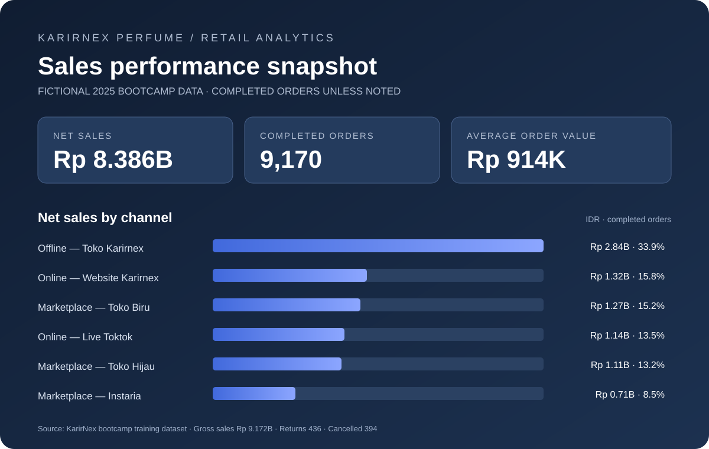

DATA ANALYTICS / SQL · PYTHON · LOOKER STUDIO
Retail Sales & Channel Performance Analytics
KarirNex Perfume
A KarirNex training case completed in October–November 2026, analysing 10,000 fictional 2025 perfume-retail orders across brands and sales channels. Google BigQuery SQL and Python/Pandas were used to investigate sales, order status, average order value, and channel contribution; findings were communicated through a Looker Studio KPI dashboard.

Rp8.386BNet sales · completed
9,170Completed orders
Rp914,472Average order value
8.6%Gross value returned/cancelled
01 / ANALYTICAL OBJECTIVE
Which sales channels and product groups contribute most, and where is revenue leakage occurring?
The project uses a fictional 2025 perfume-retail dataset containing 10,000 orders, 20 brands, and six sales channels. The analysis distinguishes gross sales from net sales, and completed orders from returned or cancelled orders, so performance is not overstated by including non-completed transactions.
02 / TOOLCHAIN
Google BigQuery SQL for structured queries, Python for analysis, and Looker Studio for communication.
- Google BigQuery SQL: DISTINCT, LIKE, IN, BETWEEN, EXTRACT, GROUP BY, HAVING, aggregation, sorting, and filtering.
- Python: Pandas for data preparation and aggregation; Matplotlib for analytical charts.
- Dashboard: Google Looker Studio for headline KPIs, time trends, channel comparison, and reporting.
03 / KEY FINDINGS
Offline store contributed the largest share of net sales in the training dataset.
- Gross sales were Rp9,172,438,800; completed-order net sales were Rp8,385,708,450.
- 9,170 orders were completed; 436 were returned and 394 cancelled.
- Average order value for completed orders was Rp914,472.
- Offline – Toko Karirnex contributed Rp2,838,800,600 or 33.9% of net sales, with 5.8% gross value lost to returns/cancellations.
- Online channel leakage ranged from 8.7% to 10.8% in the analysed dataset.
04 / BUSINESS INTERPRETATION
Channel prioritisation should consider revenue, leakage, and cost—not sales alone.
The training analysis recommended prioritising the offline store as the largest net-sales contributor and monitoring online channels for returns/cancellations. The recommendation is limited because the dataset does not include operating costs, marketplace commissions, or profit margins; channel ranking is therefore based on sales, not profitability.
05 / MY CONTRIBUTION & LIMITATIONS
Querying, data analysis, and dashboard storytelling.
I completed SQL exercises, Python data-analysis tasks, and dashboard reporting using the supplied bootcamp dataset. The dashboard is a learning artefact, not an audited report for a real perfume retailer.
06 / PROJECT GALLERY
Visual evidence & outputs.
Selected maps, dashboard views, and project documentation. Select an image to view it at a larger size.
Data & interpretation note: The dataset is fictional training data. Net sales refer to completed orders. The channel recommendation is based on sales and return/cancellation rates only; the source data does not include operating costs, marketplace fees, or profit margins.